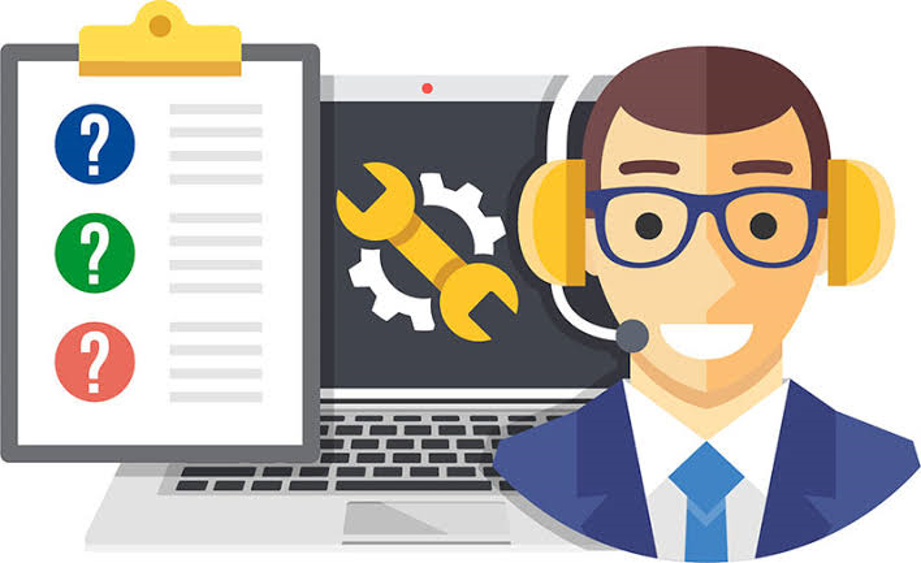

Bienvenidos a Nuestro Servicio
Nuestro servicio de soporte técnico de computadores está diseñado para ofrecer soluciones rápidas y efectivas
a todas tus necesidades tecnológicas. Nos especializamos en resolver problemas tanto de hardware como de software,
proporcionando asistencia experta y personalizada para asegurar el óptimo funcionamiento de tus equipos.
¿Qué incluye nuestro servicio?
Reparación de Hardware y Software
Instalación y Configuración de Sistemas Operativos
Eliminación de Virus y Malware
Mantenimiento Preventivo
Recuperación de Datos
Asesoramiento y Consultoría Técnica
Servicios
- Reparación de Hardware y Software
En nuestro servicio de reparación de hardware y software, nos especializamos en resolver una amplia gama de problemas que pueden afectar el rendimiento y la funcionalidad de tus dispositivos informáticos. Desde problemas físicos con componentes internos hasta errores de software que afectan la operatividad, nuestro equipo técnico está capacitado para ofrecer soluciones rápidas y efectivas.
¿Qué incluye nuestra reparación de hardware y software?
Diagnóstico Preciso: Realizamos un análisis detallado para identificar tanto fallos de hardware como errores de software que puedan estar afectando el funcionamiento de tu equipo.
Reparación de Hardware: Nos ocupamos de la sustitución o reparación de componentes dañados como placas madre, discos duros, memorias RAM, tarjetas gráficas, entre otros. Aseguramos que tu equipo recupere su funcionalidad óptima.
Solución de Problemas de Software: Abordamos errores de sistema operativo, conflictos de software, malware y virus. Realizamos reinstalaciones y configuraciones para garantizar un sistema estable y seguro.
Actualización y Mantenimiento: Implementamos actualizaciones de software y firmware para mejorar el rendimiento y la seguridad de tu equipo. También ofrecemos mantenimiento preventivo para evitar problemas futuros.
Recuperación de Datos: En caso de pérdida de datos, empleamos técnicas avanzadas para recuperar información crítica y aseguramos la integridad de tus archivos.
- Instalación y Configuración de Sistemas Operativos
Nuestro servicio de instalación y configuración de sistemas operativos está diseñado para asegurar que tus dispositivos informáticos funcionen de manera óptima y cumplan con tus necesidades específicas. Desde la instalación inicial hasta la configuración avanzada, nuestro equipo técnico se encarga de proporcionarte una experiencia sin complicaciones.
¿Qué incluye nuestra instalación y configuración de sistemas operativos?
Instalación Profesional: Realizamos la instalación de sistemas operativos como Windows, macOS, Linux y otros, asegurando que el proceso se lleve a cabo de manera adecuada y sin errores.
Configuración Personalizada: Adaptamos la configuración del sistema operativo según tus preferencias y requisitos. Esto incluye ajustes de idioma, zonas horarias, configuración de red, y más.
Actualizaciones y Parches: Aplicamos las últimas actualizaciones de seguridad y parches de software para garantizar la estabilidad y la protección contra vulnerabilidades conocidas.
Optimización de Rendimiento: Ajustamos la configuración del sistema operativo para maximizar el rendimiento de tus dispositivos, mejorando la velocidad de respuesta y la eficiencia del hardware.
Asistencia Post-Instalación: Estamos disponibles para resolver cualquier problema que puedas tener después de la instalación inicial, proporcionando soporte técnico continuo según sea necesario.
- Eliminación de Virus y Malware
Nuestro servicio de eliminación de virus y malware está diseñado para proteger y restaurar la integridad de tus sistemas informáticos, eliminando amenazas que puedan comprometer la seguridad y el rendimiento de tus dispositivos.
¿Qué incluye nuestra eliminación de virus y malware?
Análisis Exhaustivo: Realizamos un análisis profundo de tu sistema para detectar y identificar cualquier tipo de virus, malware, spyware, adware y otras amenazas potenciales.
Eliminación Efectiva: Empleamos herramientas y técnicas avanzadas para eliminar completamente los programas maliciosos de tu sistema, asegurando que todas las amenazas sean erradicadas de manera efectiva.
Restauración del Sistema: Donde sea posible, restauramos la configuración y los archivos afectados por los virus y malware para devolver el sistema a su estado operativo normal.
Optimización de la Seguridad: Configuramos medidas adicionales de seguridad, como software antivirus y firewalls, para prevenir futuros ataques y proteger tus datos contra amenazas cibernéticas.
Educación y Asesoramiento: Proporcionamos orientación sobre buenas prácticas de seguridad cibernética para ayudarte a mantener tus dispositivos protegidos en el futuro. - Mantenimiento Preventivo

- Recuperación de Datos

- Asesoramiento y Consultoría Técnica 
Contactos
Si necesita ayuda, no dude en contactarnos. Estamos disponibles 24/7 para asistirle.
Teléfonos: 300 000 0000 - 200 000 0000
WhatsApp: 300 000 0000
Email: soporte@solucionespda.com